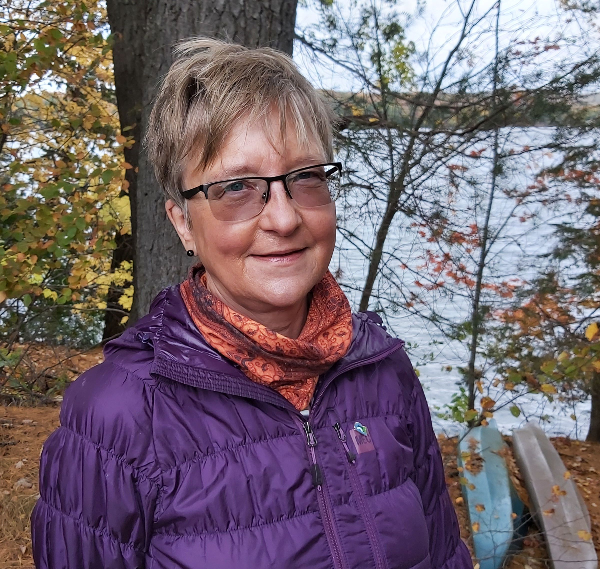
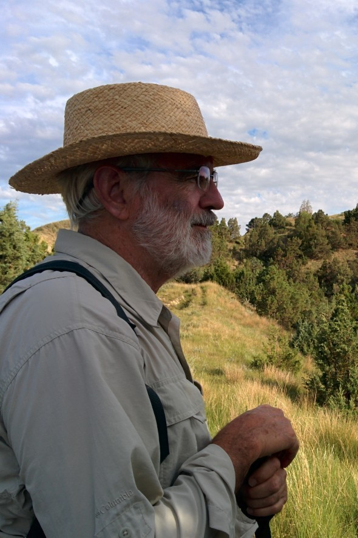

About
Research-quality studies on lakes, reservoirs and watersheds
Freshwater Research consists of two scientists, Dr. Gertrud Nürnberg and Dr. Bruce LaZerte. Both have extensive experience in the assessment of water quality in lakes and effects of external (watershed) and internal (sediment) characteristics on such water quality.
Dr. Gertrud Nürnberg

Gertrud is an environmental scientist with over 30 years of experience studying and modeling the geochemistry of lakes and reservoirs (Ph.D. 1984, McGill University, Montreal, Canada). She develops models to predict average nutrient concentrations in lakes and reservoirs, including those that are polluted or anoxic (oxygen-free at the bottom). Past experience includes the determination of watershed (external) and sediment (internal) loadings of nutrients and other pollutants, the establishment of lake nutrient objectives and TMDLs (Total Maximum Daily Loads) for municipal and state agencies, and the estimation of anoxia in more eutrophic waters. She is a past Director of the Eastern Canada Region of NALMS (North American Lake Management Society) and was associated editor of NALMS’ peer-reviewed journal Lake and Reservoir Management from 1996 to 2013.
Gertrud Nürnberg has been frequently invited to speak at conferences, universities, and institutes throughout North America and Europe and has been presenting at 1-3 conferences per year. She has been active in the scientific peer review process as reviewer for at least 30 journals with about one paper per month on average. In addition, she has provided review services of grant proposals for the Canadian government (NSERC), several US States and several European countries.
Dr. Bruce LaZerte

Bruce is an environmental scientist with statistical training (Ph.D. 1978, M.A. Statistics 1975, University of Michigan, USA) and has many years of experience studying and modeling the hydro-geochemistry of upland catchments, wetlands and lakes. His research has included the impact of “acid rain” on forested catchments and wetlands, aluminum and acidified soil geochemistry, aqueous toxicology and toxic trace metal geochemistry. He has also developed daily, time-dynamic, mass balance models for nutrients in lakes and reservoirs and studied stable carbon isotope ratios in lake plankton and sediments.